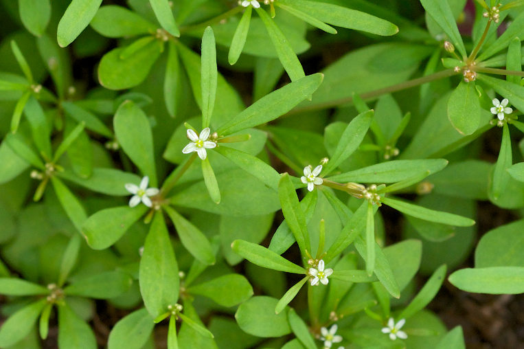

Carpetweed ( Mollugo verticillata)

Carpetweed grows along the ground with branching stems that are green or greenish brown. The stems can grow from 2 to 12 inches long. The leaves are smooth and rounded tapering at their base, and they tend to grow in whorls of leaves at stem nodes. The small white flowers grow in clusters of 2 to 5, and they have 5 petals each.